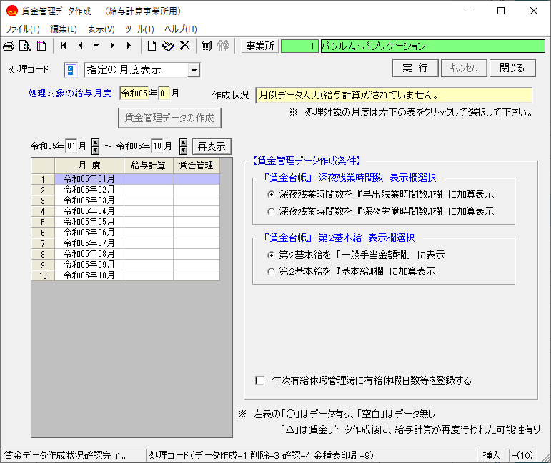
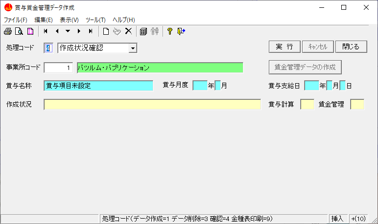

目 次
１.データを作成する
賃金台帳として必要なデータを作成する手順等について解説します。
-
１-５その他
- ①給与支給日を変更する場合
- ②賃金変動や健康保険などの加入状況を変更する場合
- ③健康保険と厚生年金保険の標準報酬月額を変更する場合
- ④賞与の賃金データを変更する場合
- ⑤締日や支給日の変更により月度を移動する場合
- ⑥支給項目の位置を変更する場合
- ⑦特定の月度のデータを合算する場合
-
１-６理解度テスト
✖
１-１ 給与計算により作成する
給与計算を行うことで簡単に賃金台帳（賃金管理）を作成できます。
１-２ 賞与計算により作成する
賞与計算を行うことで簡単に賃金台帳（賃金管理）を作成できます。
① 賞与計算を行った後に賃金台帳（賃金管理）を作成する
１-３ 手入力する
賃金台帳（賃金管理）は使用用途に応じて４種類の形式があります。
種類毎の入力方法について解説します。
① 作成種類について
事業所情報より設定を行う
事業所情報より作成種類を設定ができます。

給与計算をするを選択した場合は、賃金台帳作成型となります。
給与計算をしないを選択した場合は、下記の４種類から選択します。
・個人単位 賃金台帳作成型
・個人単位 年調実施型
・個人単位 社保雇用型
・個人単位 労保専用型
各種類の説明
・賃金台帳作成型
→ 給与計算をすると同じ形式で支給項目と控除項目を設定できます。
・年調実施型
→ 年末調整に必要な情報のみを設定できます。
・社保雇用型
→ 社会保険と雇用保険の手続きに必要な情報のみを設定できます。
・労保専用型
→ 労働保険の手続きに必要な情報のみを設定できます。
注意事項
１、事業所単位 労保専用型：現在使用することはできません。
２、賃金台帳を印刷したい場合は賃金台帳作成型を選択してください。
② 賃金台帳作成型にて入力する

 』を参照してください。
』を参照してください。③ 年調・社保・労保型にて入力する
１-４ データを取り込む
各形式の賃金台帳（賃金管理）をExcelやCSVファイルより取り込む手順について解説します。
① 台帳作成型にて取り込みを行う
② 年調・社保・労保型にて取り込みを行う
③ 賞与データの取り込みを行う
④ 他システムデータにて取り込みを行う
１-５ その他
賃金台帳（賃金管理）についての便利機能や特別な処理について解説します。


{kind=link}
{kind=link}
{kind=link}
{kind=link}
{kind=link}
{kind=link}
{kind=link}
{kind=link}
{kind=link}
{kind=link}
{kind=link}
{kind=link}